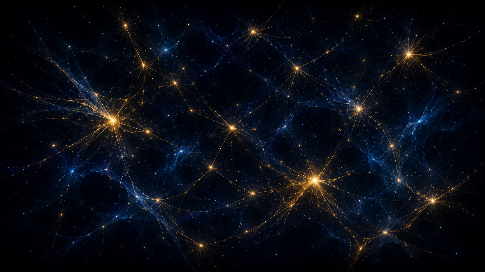

01 · Percurso Pessoal
A história de vida e a pergunta que não some
"Quem sou eu?" Parece simples, mas raramente tem resposta fácil. Quando voltei ao passado tentando identificar o que me trouxe até aqui, o que encontrei não foi uma linha reta de escolhas conscientes — encontrei pessoas, acasos e circunstâncias que moldaram algo em mim antes que eu percebesse.
Hannah Arendt dizia que nossa identidade se revela com mais clareza para os outros do que para nós mesmos. Faz sentido: é no campo das relações — no que fazemos e falamos diante do mundo — que nos tornamos visíveis, inclusive para nós. Revisitar a própria história não é romantizar o passado; é reconhecer que certas escolhas foram menos "minhas" do que eu gostaria de admitir.
"A identidade de cada indivíduo poderia se revelar com muito mais clareza para os outros — aqueles para os quais nos apresentamos em nosso falar e agir no mundo — do que para si mesmo."Hannah Arendt · A Condição Humana
O exercício de revisitar a própria trajetória sem inventar um fio condutor onde ele não existe foi mais difícil do que esperava. É tentador montar uma narrativa coerente e heróica do passado. A honestidade intelectual exige reconhecer o papel do acaso sem abdicar da responsabilidade pelas escolhas que de fato foram minhas.
02 · Trajetória Acadêmica
Continuidade, ruptura e o sonho que ainda não tem nome
Entrar na universidade pode ser continuidade ou ruptura — às vezes os dois ao mesmo tempo. Para mim foi um momento de confronto: convicções que eu trazia foram testadas por perspectivas que eu simplesmente não tinha cogitado antes. Esse processo de revisão não é desorientação; é o que a universidade deveria provocar.
A matéria me fez perceber uma distinção importante: há uma diferença enorme entre cursar algo porque eu quero e cursar algo porque alguém quer por mim. Muitas escolhas acadêmicas são, na prática, tentativas de satisfazer expectativas externas — da família, do mercado, da imagem que achamos que precisamos projetar. Identificar isso não é motivo de culpa, é de autoconhecimento.
Propósito de vida
Propósito não é uma meta fixa que se escolhe uma vez e nunca muda. É o esforço contínuo de alinhar o que fazemos com quem somos — e isso implica tolerância para a incerteza, honestidade sobre os próprios limites e disposição de revisar o plano sem abandonar o sonho.
Ruth Chang, em sua palestra sobre como fazer escolhas difíceis, aponta algo que ressoa aqui: nas decisões verdadeiramente difíceis, nenhuma opção é objetivamente superior. O que nos define é o que fazemos com esse impasse — e fazer uma escolha é também uma forma de construir quem queremos ser.
03 · A Condição Humana
Nenhum ser humano existe sem relação
É quase impossível imaginar um ser humano completamente isolado — não apenas pela solidão emocional, mas porque até a sobrevivência básica depende de relação com o ambiente. A condição relacional não é uma característica optativa; ela é constitutiva. Fazemos parte de algo maior desde o primeiro instante.
O que me chamou atenção nesta unidade é como o conceito de relação é simultaneamente universal e específico. Todo campo do conhecimento — ética, psicologia, política, ecologia, teologia — é, no fundo, uma tentativa de mapear um tipo particular de relação. A Universidade, como instituição, é ela própria uma tentativa de reunir essa diversidade sob um teto.

"O homem ultrapassa infinitamente o homem."Blaise Pascal
A inversão proposta pelo conteúdo — pensar não como realizar o propósito de vida, mas o que o impede — foi uma das ideias que mais ficaram comigo. Às vezes a clareza vem de eliminar o que prejudica as relações fundamentais, não de construir metas elaboradas. Antes de saber aonde ir, vale perguntar o que está travando o caminho.
04 · As Quatro Relações
Consigo, com os outros, com a natureza e com o transcendente
A matéria organizou o caráter relacional do ser humano em quatro dimensões elementares. Não são categorias estanques — na prática se interpenetram. Mas distingui-las ajuda a ver onde estão os pontos cegos de cada um.
Consigo mesmo
Carol Dweck mostrou algo preciso: como nos vemos determina o que achamos que podemos fazer. Uma mentalidade fixa trata talento como teto. Uma mentalidade de crescimento trata o esforço como chave. A relação mais fundamental é a que você tem com sua própria imagem.
Com os outros
Relações interpessoais são vias de mão dupla. Um agir egoísta não só prejudica o outro — estreita o mundo do próprio egoísta. A qualidade das relações que construímos define, em boa parte, as possibilidades que se abrem para nós.
Com a natureza
Não somos apenas espectadores do ambiente — somos afetados por ele e o afetamos. Essa relação vai de refugiados climáticos à física quântica: a natureza não é pano de fundo, é participante ativa de nossa existência.
Com o transcendente
Seja pela fé, pela filosofia ou pelo espanto diante do cosmos, todo ser humano eventualmente se depara com questões que ultrapassam o mensurável. Transcender significa ir além de si mesmo — e isso também é uma forma de relação.

Um detalhe que o texto traz: a dimensão ética aparece em todas as quatro relações. Não é coincidência — é o que coloca ética e moral no centro de qualquer projeto de vida real, não como regras externas, mas como resultado natural de levar essas relações a sério.
Mentalidade Fixa
- Capacidades são inatas e imutáveis
- Erros indicam falta de talento
- Evita desafios para não falhar
- Crítica é ameaça
Mentalidade de Crescimento
- Capacidades se desenvolvem com esforço
- Erros são dados para aprender
- Desafios são oportunidades
- Crítica é informação
Adaptado de Dweck, C. Mindset: a nova psicologia do sucesso. Objetiva, 2016.